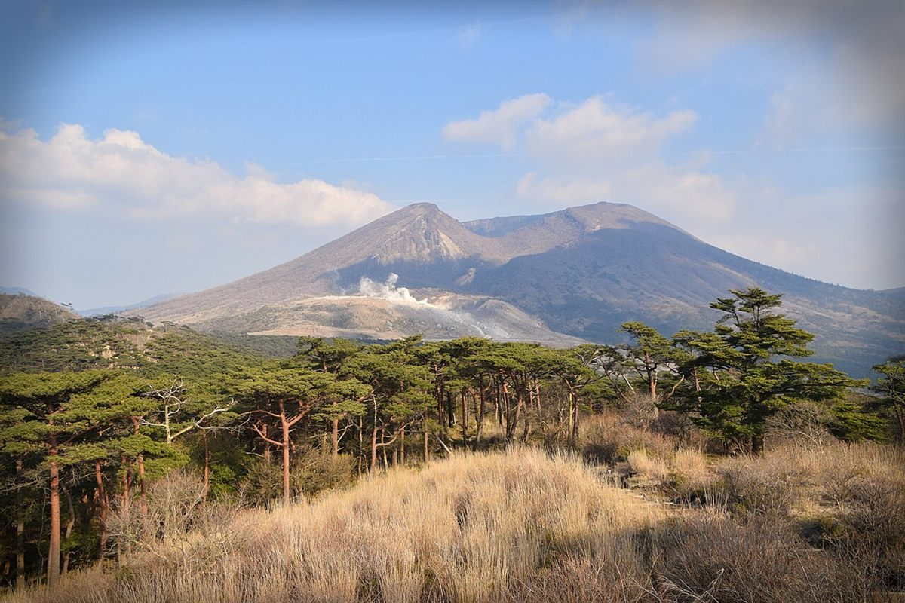

イメージ写真。実際の周辺の風景ではありません。
〒289-2144 千葉県匝瑳市八日市場イ2915
営業時間: 準備中(お問い合わせください)
Googleマップで開く
お越しの方法などはお電話でご確認ください。
Instagramもご覧ください。
営業時間やメニューは準備中です。お問い合わせください。
このページの写真はフリー素材のイメージ写真で、店舗の実際の様子ではありません。他の地域で撮影されたものや、撮影地が不明なものを含みます。